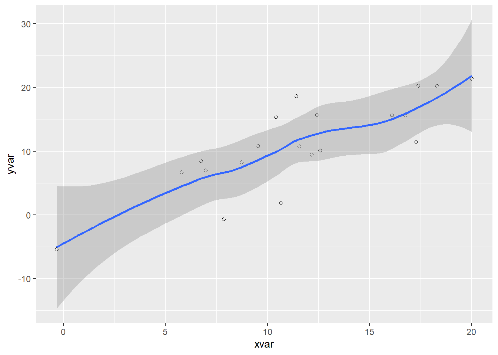

This document provides an overview of data visualization techniques and tools applied in the ‘Article Template’ results example.
The text below is intended to be an instructive example…
It should be noted that you have the option to create a raw R script (*.R) and use # to indicate comments in order to record the goals and procedures of the analysis. On the other hand, we think that a single Quarto document accomplishes the same goal while also improving the organization and didactics of the analysis documentation.
However, the best approach is to use dynamic documents like Quarto .qmd if you wish to adhere to the suggestion of keeping scripts and analyses separate and integrating just the outputs that are crucial to your story into the article’s content.
As an illustration, you can write your script according to best practices, adding whatever is required to advance the narrative, but highlighting the text that will be included in the article in a different code chunk, as seen in the example below.
A code chunk used to construct example figure in the Results section
`geom_smooth()` using method = 'loess' and formula = 'y ~ x'

Figure 1: Pressure
Keep in mind that the code chunk in this example needs to have all of the components necessary for it to exist, which in this case includes reading the ggplot2 library. When producing more sophisticated outputs, the researcher may decide to just include the final result (the figure) in the article and provide information on how it was made in the accompanying script.
A code chunk used to construct example table in the Results section
Here is another example of how we can embed a table into the text narrative with the knitr::kable() function to print tables as HTML:
Code
knitr::kable(head(ggplot2::diamonds))
Table 1: Diamonds characteristics
carat
cut
color
clarity
depth
table
price
x
y
z
0.23
Ideal
E
SI2
61.5
55
326
3.95
3.98
2.43
0.21
Premium
E
SI1
59.8
61
326
3.89
3.84
2.31
0.23
Good
E
VS1
56.9
65
327
4.05
4.07
2.31
0.29
Premium
I
VS2
62.4
58
334
4.20
4.23
2.63
0.31
Good
J
SI2
63.3
58
335
4.34
4.35
2.75
0.24
Very Good
J
VVS2
62.8
57
336
3.94
3.96
2.48
The outputs produced when rendering the document can be stored in both the Output/Results and root docs/folders.
The researcher can then decide which outputs to include in the article and which to leave out. This is a great way to keep the article concise and focused on the most important results.